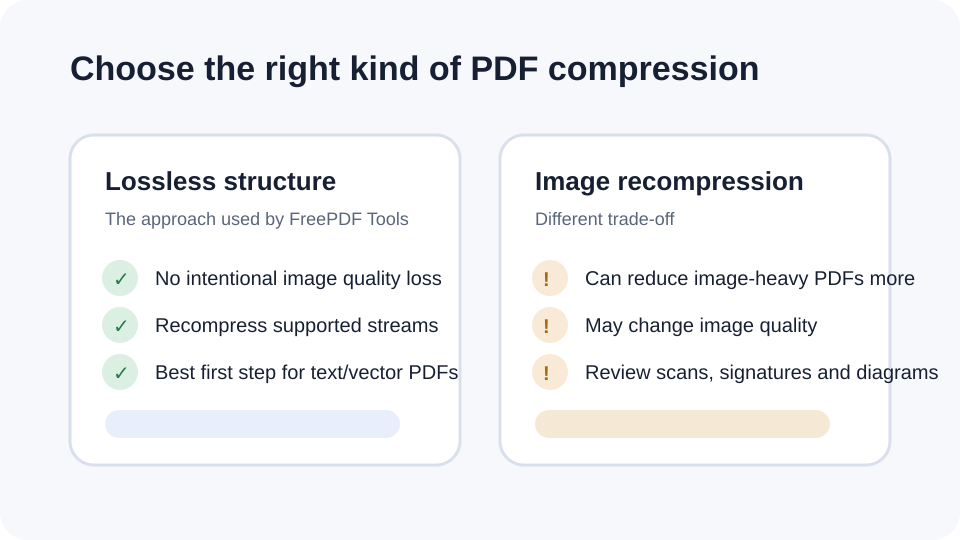

How to reduce PDF size for an upload limit
Government, job and document portals often impose a maximum upload size. Start with the least destructive option, then decide whether image quality can be reduced if the file still exceeds the limit.
Updated September 28, 2026 · FreePDF Tools
Start with lossless compression
A lossless pass can recompress PDF structures and remove some redundancy without deliberately reducing image quality. It is a sensible first step for documents that are already readable.
Why some PDFs barely shrink
If most of the file is made of JPEG photographs or scans that are already compressed, structural compression cannot remove much more information.
When stronger optimization is needed
A strict limit may require image resampling or quality reduction. That is a different tradeoff and should be treated as an explicit quality decision rather than a hidden side effect.
Verify the portal requirement
Check the exact size limit, page count and file type accepted by the destination. Open the reduced PDF before upload and make sure important details remain readable.


Reduce the file size
Start with the browser-local lossless PDF compressor.